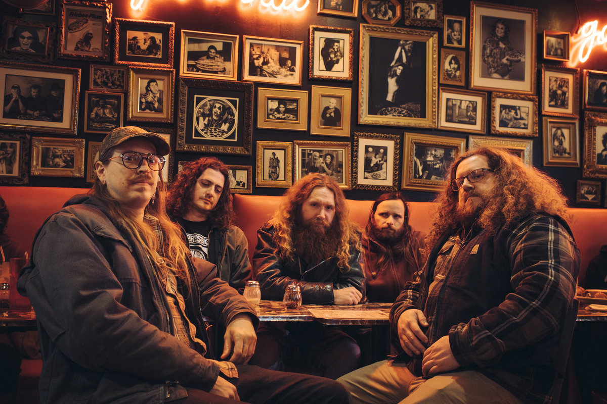

Inter Arma – New Heaven
Being Unrelentlessly Insane, Yet Kind and Intimate
Around five years ago, Inter Arma's music entered my life with Sulphur English. From the very first moment, I fell in love with these guys. Their massive, thick, and powerful sound is nothing short of astonishing. Founding member and drummer T.J. Childers' riff-writing was phenomenal. Many of the riffs carried a doom-death metal essence, reminiscent of bands like Incantation and Autopsy. However, as I delved deeper into their music, I realized they felt more like a blend of Black Sabbath and Morbid Angel—two of my all-time favourite bands.
What made them even more captivating was their ability to conjure a dense atmosphere and evoke the sombre weight of depression, much like Neurosis. Given that Neurosis is among my top three bands, this connection only deepened my admiration for Inter Arma.
But the most important element that made me a fan of Inter Arma was, once again, T.J. Childers—this time for his drumming. His John Bonham-influenced playing style made the bass drums echo with such force that it felt like they were disrupting your heartbeat. Combined with mid-high tuning and modern, dynamic recording techniques, the bass drums seemed to seismically shift the earth.
When all of this was paired with their raw, unrestrained songwriting and incredible vocals, it became almost impossible for me not to fall in love with Inter Arma. So, after a couple of years of immersing myself in their music, I found myself longing relentlessly for new material.
Now that we have the album, let’s dive into a quick Q&A: Did it satisfy you?
For me, the answer, unfortunately, is no. Don’t get me wrong—New Heaven is an awesome record, and I’ve listened to it many times. However, my expectations were so high that certain aspects of the album ended up leaving me disappointed.
When the title track was released as the first single, I realized they were coming with something different compared to their previous work. I initially thought their new style was reminiscent of Imperial Triumphant and immediately tempered my expectations.
But after a short while, as I got more familiar with it, I started to think it was perfect. I began respecting them for not just delivering Sulphur English 2.0 and kept anticipating the album where I had left off.
I actually think this new approach Inter Arma took fits their music perfectly. Dissonance has always been present in their sound, lurking just beneath the surface. Blues, too, has always been a genre that aligns seamlessly with their character. Their highly reverbed, densely layered, and thick production has consistently reflected their borderline neurotic behavior with precision.
On the track "Violet Seizures," you can immediately feel the stiffness and mounting anxiety, which intensifies as the song progresses. It’s easily one of the best tracks they’ve ever made.
So, what was the problem for me? Was it the songwriting? Nope, the songwriting is great once again. What disappointed me were the elements they subtracted from their music. There are no epics steeped in that depressive state of mind; it doesn’t leave me feeling doomed like its predecessors.
Most importantly, every time I listen to this record, I’m left feeling like a ravenous, hungry wolf by the end. At just 40 minutes, the album is quite short by Inter Arma’s standards. Many of the tracks aren’t even metal or don’t aim to be the magnum opus of the album. Take "Endless Grey"—while awesome, it mostly feels like an interlude. Tracks like "Gardens in the Dark" and "The Children the Bombs Overlooked" are intriguing, with the band exploring entirely new territories like gothic rock and Nine Inch Nails-inspired industrial approach.
While these tracks don’t elevate the album to masterpiece status, they’re still solid efforts. The unique, individualized approach throughout the record strengthens its character. Despite its wide range of genres, the album feels like a cohesive whole, flowing seamlessly from start to finish.
However, with these experimental and bluesy tracks, I’m still left feeling unsatisfied, like a starving predator—and that doesn’t make me entirely happy. I kind of miss their psychotic edge. That said, I have to give them credit for crafting an impressive record and finalizing it with an unexpected yet perfect closer, which combines Neil Young’s heavy, melancholic feel with grittier, more commanding vocals.
But you know what? Before meeting T.J., I was actually intimidated by him. He turned out to be one of the kindest artists I’ve ever met. If there’s anything better than him, it’s their live performance. They remain the best live act I’ve ever seen—you absolutely must experience them live. I eagerly await their next release. Inter Arma, you have my trust!
Standouts: New Heaven, Violet Seizures, Forest Service Road Blues
Rating: 8/10